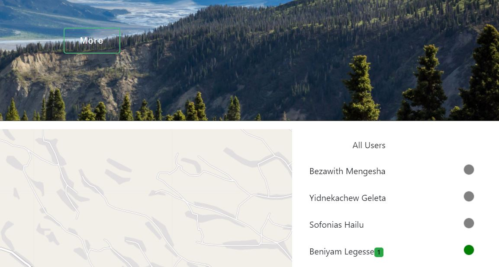

Location Trakcer
a system which trackes the location of a person
Introduction
Location Tracking
This is a a location tracking system based on IP address. This is one of my portifolio project that was done at the end of the final semister at holberton school. The project covers all fundamental concepts required for any web development. Location tracking refers to technologies that physically locate and electronically record and track the movement of people or object.
Features
some of the features that are covered by the Location tracker are described below in steps.
responsivness
shows differently in different view
Loaction tracker is responsive web app so that it is visible in mobile, tablet, desktop & laptop view
Online & Offline
Users are defined as online or offline
In this part of the project, I provide a way to separate online & offline users. Thus any person who logged in to the system is identifed as online for other users. any person who logged out of the sytem is defined as offline. thus the system continousy checks the user status
Location
Location of Online user
In this part of the project, I have provided a way to display the location of the users. the locatin of the user is described by combining the city & coutry of the online users. It is written in text box below the map.
Map
the Map of the online user
In this part, I have provided a way to display the map of the online users. the map is displayed at initial zoom scale of 14. you can zoom in & zoom out based on your interest. the plus & minus sign at the left corner of the map is provided for this purpose.
Chat
chat with the user
The system allows the user to chat each other. To chat to the user, first select the user whom you want to chat, at that time the dialog box will appear. then in the space provided, write your message and hit enter.
Notification
Notify when the message has sent
the system also shows the notifcation when the message has seccessfully sent to the recipent. the number of message that are sent seccessfully is shown in a little box above the user name.
About
Address
Addis Ababa EthiopiaAddis Ketema, woreda 7
Phone
(251) 940252121Social
Future Task
Due to the time limiation, I haven't completed all part of the project. In the future I will add the following features
- capability to show a notification to the reciver when the sender starts typing a message
- capability to add & send imogi
- capability to add & send images
- capability to allow a group chat